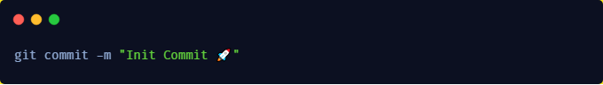

Git Init

Starting fresh and telling git that we want it to play with us and track our files.
Git Add

Tell git what files to track for us. PS: You can either use filenames or . (dot means all files and folders)
Git Commit

You are committing to it and save the state of all files. This is like a save for a game. Commiting also needs
a message hence why we use -m
Git Push

Telling git that we want to push it to the cloud Note that this can be github, gitlab, heroku anything that
has git installed.
A Good Commit

Commit messages should be nice and readable.
As long as a tweet
A Bad Commit

This does not tell any developer what you did and they will have to read your code
Let’s play with history
Git Branch
Alternative Timelines
Independent of others
Great for testing new features
Git Checkout
Moving between timelines
Peak into the feature or the past.
Git is a time machine
Git Merge
No need for cut and paste
Move code between timelines
Keep old commits.
History is preserved
You merge things INTO the branch you are on.
Merge Conflics
Don’t be alarmed
Git is just saying you have to fix it
You took changes that are pretty similar and git don’t know what to do
Fixing it is as simple as open the file
Git Reset Hard
All changes before this are reset, regardless if they are tracked or not.
Git Reset Soft
All changes before this are reset, though files that are staged are still there.
Git Reset Head
All changes are reset to what they where in staged status
Git flow?
If you stick to the flow you will speed things up
Focus on one feature
Commit often
Merge things and redo it.